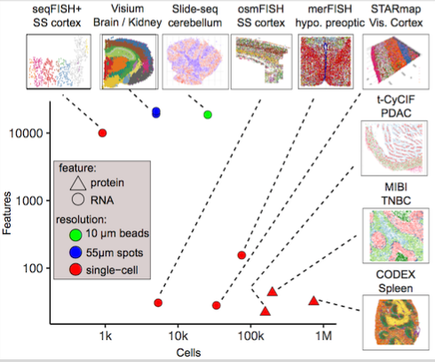

Giotto
Welcome
The Giotto package consists of two modules, Giotto Analyzer and Viewer, which provide tools to process, analyze and visualize single-cell spatial expression data. The underlying framework is generalizable to virtually all currently available spatial datasets. We recently demonstrated the general applicability on 10 different datasets created by 9 different state-of-the-art spatial technologies, including in situ hybridization (seqFISH+, merFISH, osmFISH), sequencing (Slide-seq, Visium, STARmap) and imaging-based multiplexing/proteomics (CyCIF, MIBI, CODEX). These technologies differ in terms of resolution (single cell vs multiple cells), spatial dimension (2D vs 3D), molecular modality (protein vs RNA), and throughput (number of cells and genes).
Reference:
Ruben Dries*, Qian Zhu* et al. Giotto, a pipeline for integrative analysis and visualization of single-cell spatial transcriptomic data. Biorxiv doi.org/10.1101/701680.

Browse tutorials to see the capabilities of the Analyzer in analyzing diverse spatial datasets from various technologies.
Click for a live demo of the Viewer to see how the interactive Giotto Viewer visualizes spatial datasets.
Test-drive Giotto by downloading a docker image, or by installing Giotto natively. Docker image, Installation, Download
Development
Giotto Analyzer
rubd.github.io/Giotto
github.com/RubD/Giotto
Giotto Viewer
spatial.rc.fas.harvard.edu/giotto-viewer
pypi.org/project/giotto-viewer/
pypi.org/project/smfish-image-processing/
Giotto analyzer created by Ruben Dries. Giotto viewer created by Qian Zhu. 2020 - All rights reserved. GC Yuan laboratory.